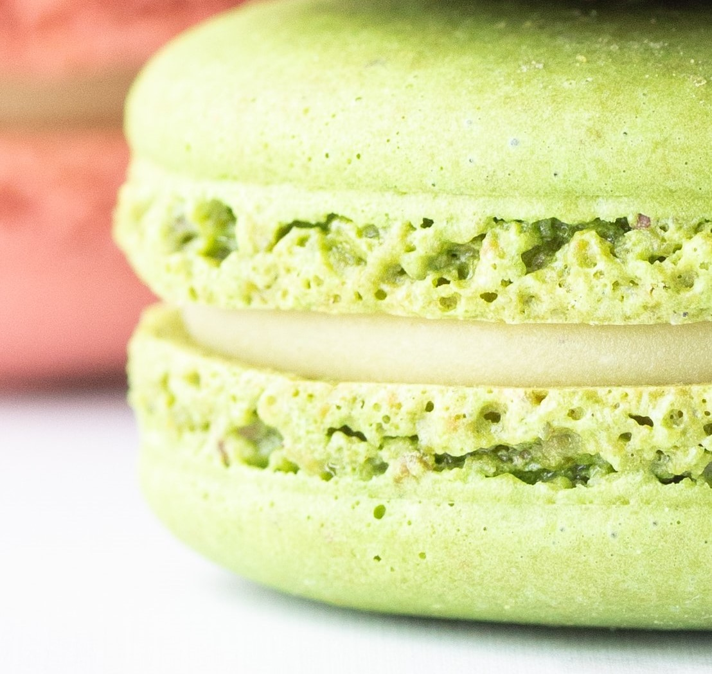

Products
Donut

Indulge in the delectable flavors of our signature Maple Donut, a true delight for your taste buds. This heavenly creation embodies the perfect harmony of a classic donut infused with rich, natural maple syrup.
Picture a golden brown, fluffy donut with a subtle hint of caramelization, boasting a perfectly crisp exterior that gives way to a soft, pillowy center. As you take your first bite, the enticing aroma of maple wafts through the air, instantly awakening your senses.
Our Maple Donut is generously coated in a velvety glaze infused with the essence of pure maple syrup. With each bite, you'll experience a delightful combination of sweetness and a distinct, warm maple flavor that dances on your palate.
To add a touch of elegance and visual appeal, we delicately sprinkle the Maple Donut with finely chopped toasted pecans, which add a delightful crunch and a nutty undertone that complements the maple perfectly.
Cookies
Introducing our zesty and refreshing Lime Cookie, a burst of citrusy goodness that will awaken your taste buds with every bite. This delightful treat embodies the perfect balance of tangy lime flavor and buttery sweetness.
Imagine a perfectly baked, golden cookie with a slightly crisp edge that gives way to a soft and chewy center. As you take your first nibble, the vibrant aroma of freshly squeezed limes fills the air, transporting you to a sunny citrus grove.
Our Lime Cookie is infused with the essence of juicy limes, resulting in a tantalizing citrusy sensation that dances on your tongue. The bright and tangy notes of lime are complemented by the delicate sweetness of the cookie dough, creating a harmonious flavor symphony that is both refreshing and comforting.
Each Lime Cookie is adorned with a dusting of powdered sugar, adding an elegant touch and a hint of sweetness that perfectly complements the tangy lime essence. The cookie melts in your mouth, releasing a burst of citrusy flavors that leave you craving for more.